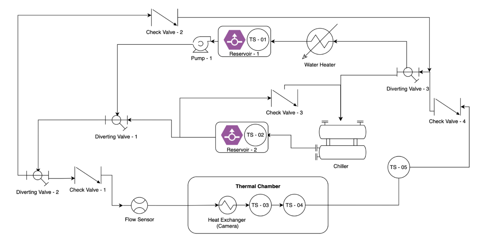
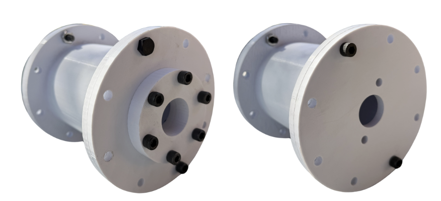
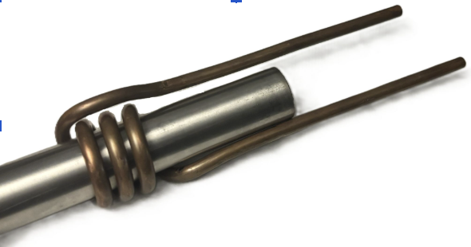
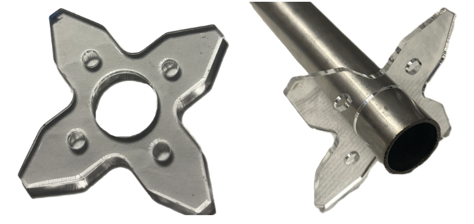
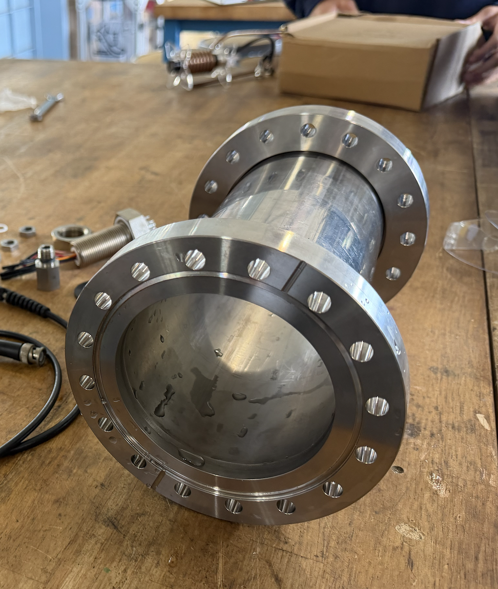

Project Overview
Spacecraft components undergo thermal vacuum testing to verify that they can withstand the extreme temperatures and low-pressure environments encountered in space. During these tests, engineers need continuous visual access to monitor deployable structures and identify potential issues.
At Northrop Grumman Innovation Systems, this visibility was limited by two challenges: the thermal chamber's viewing window could become obstructed by frost and condensation, while conventional commercial cameras could not operate directly in the chamber's extreme temperature range.
Our five-person team was tasked with designing a protective camera housing that could be placed inside the thermal chamber while maintaining the camera within its operating temperature limits. The system also needed to provide a clear optical path, support wired live streaming, and allow the camera to be removed between tests.
The final design integrated a steel vacuum housing, sapphire viewport, copper-coil heat exchanger, closed-loop water circulation system, electrical feedthroughs, and supporting hardware.

Final camera housing assembly showing the enclosure, viewport, supporting hardware, and thermal management system.
Design Requirements
The sponsor's requirements guided the design of each subsystem. The highest priority was protecting the camera throughout the chamber's thermal cycle while maintaining reliable visual monitoring.

Summary of sponsor requirements and target specifications.
Concept Development
Early development focused on finding a practical way to isolate the camera from the chamber environment while maintaining optical access and providing enough thermal control for extended operation.
The team investigated different housing geometries, camera-loading mechanisms, insulation strategies, and cooling approaches. Initial concepts included passive cooling features and more complicated mechanical interfaces. These were refined as manufacturability, sealing, and thermal performance became clearer.
Early Housing Concepts
The first housing concept incorporated machined slots and extended internal fins. A 3D-printed model was used to evaluate assembly feasibility and component tolerances. Testing the concept revealed that the loading mechanism required impractically precise tolerances, while the extended fins created an unwanted conductive path between the housing and camera.
A second concept introduced a nested pipe arrangement and active cooling. However, the proposed fluid-line routing and welded interfaces created challenges for maintaining reliable vacuum seals and achieving the required component alignment.
The design eventually transitioned to a housing built around prefabricated steel flanged fittings and a rear feedthrough plate. A 3D-printed assembly prototype was used to verify component fit, hole alignment, and access for fastening hardware.

Initial housing concept with passive cooling features.

Revised concept incorporating active cooling.

3D-printed prototype used to verify assembly and tolerances.

Final housing architecture.
Final System Architecture
The final design was divided into four primary subsystems: the housing, feedthroughs, base, and plumbing/electrical systems. Each subsystem was designed to work together while maintaining the structural and environmental integrity of the complete assembly.
Housing & Optical Assembly
The outer enclosure was constructed from steel to provide a robust structure capable of withstanding the chamber's thermal environment. A sapphire viewport was incorporated at the front of the housing to provide optical access to the camera. Copper gaskets and bolted flange connections were used to seal the viewport assembly.
The camera was positioned inside a smaller steel tube surrounded by a copper cooling coil. The nested arrangement provided a dedicated region for the camera while creating an annular space that could be evacuated to reduce heat transfer and internal moisture.

Cross-sectional assembly showing the camera, inner steel tube, copper cooling coil, outer housing, and viewport.
Feedthroughs & Rear End Cap
The rear end cap provided the interfaces required to connect the internal assembly to external equipment while maintaining a sealed boundary. These interfaces included electrical connections for camera power, video signal, and thermocouples, along with inlet and outlet connections for the cooling loop.
A separate connection allowed the internal annular space to be evacuated. The rear end cap required careful machining and component placement to accommodate the feedthroughs while maintaining sufficient sealing surfaces and mechanical strength.

Rear end cap and feedthrough layout.

Electrical, vacuum, and fluid feedthrough interfaces.
Mounting Base
A steel mounting base supported the housing and secured the assembly to strut channels using strut clamps. The arrangement was designed to provide a stable installation inside the chamber while allowing the system to be moved and positioned between tests.

Mounting base and support arrangement for chamber installation.
System Drawings
SolidWorks assemblies and engineering drawings were used to define component interfaces, dimensions, and the overall assembly.
Thermal Management System
Protecting the camera required more than simply enclosing it in a steel housing. The team developed an active thermal management system to circulate temperature-controlled water around the camera assembly and remove heat transferred from the chamber environment.
The final architecture used a copper coil wrapped around the internal camera tube. Water circulated through the coil as part of a closed-loop system, allowing the camera environment to be regulated independently of the surrounding chamber.
Copper Coil Heat Exchanger
Copper tubing was selected for the heat exchanger because it could be formed around the inner steel tube and provide a thermal pathway between the camera assembly and circulating coolant.
Before fabricating the final coil, a prototype was made by manually wrapping soft-tempered copper tubing around a steel rod. This verified that a tight bend radius could be achieved without fracturing the tubing and helped establish the coil geometry required for the final assembly.

Prototype used to verify copper tubing bend radius.

Final copper coil geometry around the camera tube.
Water Circulation System
The cooling system used a pump, reservoir, copper tubing, and temperature-control components to circulate hot or cold water through the housing. Diverting valves directed the coolant through the appropriate path, while additional valves and fittings controlled the flow through the system.
The plumbing architecture was designed around a target flow rate of 0.5 L/min. The team evaluated the tubing geometry, fittings, and coil configuration to estimate the pressure losses and determine the pump requirements.

Plumbing schematic showing the reservoir, pump, valves, housing coil, and coolant flow path.
Flow Analysis & Pump Selection
Fluid calculations were performed to evaluate the system's hydraulic requirements. The analysis considered flow velocity, Reynolds number, tubing length, friction losses, and minor losses through fittings and connections.
At the target flow rate of 0.5 L/min, the estimated total head requirement was approximately 1.0–1.1 meters (3.3–3.7 feet). This indicated that the system did not require a high-pressure pump, allowing pump selection to prioritize reliability and compatibility with the operating conditions.
A low-cost off-the-shelf pump was tested using vinyl tubing and the copper coil. The test confirmed that the pump could deliver the required flow rate and circulate water through the coil without leakage.

Flow velocity and head-loss calculations.

Experimental pump and copper coil flow test.
Thermal Analysis & Simulation
Thermal analysis was used to evaluate how heat would transfer through the housing during chamber cycling and to estimate the cooling capacity required to protect the camera.
Thermal Simulation
Preliminary heat-transfer simulations were performed to investigate temperature distribution through the housing and assess whether the camera could remain within its allowable operating range. The COMSOL work provided insight into the thermal response of the structure under the expected chamber conditions.

Camera shown at operational temperature of 293 K at 5000 seconds.

Camera shown at operational temperature of 293 K at 32000 seconds.
Thermal Resistance Model
Additional heat-transfer calculations modeled the housing as a thermal network consisting of the outer steel housing, inner camera tube, camera, and coolant loop.
Because the annular region was intended to be evacuated, internal convection was excluded from the model. Heat transfer across this region was evaluated primarily through radiation and solid conduction at the support spacers.
The analysis considered spacer conduction, radiative heat transfer, conduction through pass-through components, and heat removal through the copper coil. An NTU-based heat exchanger model was used to estimate coolant temperature rise and the required thermal performance of the coil.
Hot Chamber Case
The model estimated approximately 59 W of spacer conduction heat leakage and a required coil performance of approximately 4.2 W/K.
Cold Chamber Case
The model estimated approximately 108 W of spacer conduction heat leakage and a required coil performance of approximately 5.9 W/K.
The analysis indicated that the cooling system required relatively modest heat exchanger performance, with a target coil performance of approximately 6 W/K. Spacer geometry, coil contact quality, surface finish, and conduction through the feedthroughs were identified as important design considerations.
Prototyping & Design Validation
Prototyping was used to answer specific engineering questions before committing to the final assembly. Rather than building the complete system immediately, the team tested individual components and interfaces to identify potential problems with fit, manufacturability, and performance.
A 3D-printed housing was used to evaluate assembly feasibility, component alignment, fastener access, and the tolerances between prefabricated steel fittings.
The camera did not include a wiring manual. Its cable was inspected and probed to identify the internal conductors required for power, BNC video transmission, and camera control. The wire dimensions were also checked against the selected electrical feedthrough.
Soft-tempered copper tubing was manually formed around a steel rod to verify the required bend radius and evaluate whether the tubing could maintain its shape after forming.
A low-cost pump was tested with vinyl tubing and the copper coil to verify that the required coolant flow rate could be achieved without leakage.
An acrylic spacer was laser-cut to evaluate the fit and clearances required for the final steel spacer geometry. The prototype helped verify the interference fit and spacing around the housing.

3D-printed housing fit-check prototype.

Camera cable and feedthrough investigation.

Copper tubing bend-radius prototype.

Acrylic spacer used to verify fit and clearances.
Vacuum & Leak Testing
One of the primary design objectives was to reduce the moisture inside the housing before exposing it to cryogenic conditions. Lowering the internal humidity helped reduce the likelihood of condensation or frost forming on the camera lens during testing.
Testing Procedure
The sealing interfaces were prepared using vacuum grease and copper gaskets. The housing bolts were tightened using a calibrated torque wrench to the manufacturer's specified torque of 190 lb-in.
An industrial vacuum pump was connected to the housing through a pressure gauge and needle valve. The housing was evacuated to a selected pressure, isolated from the pump, and monitored as the internal pressure increased over time.
The pressure recovery measurements were used to estimate the system's leak rate. Additional ethanol leak testing was performed around suspected sealing interfaces, including threaded fittings, gasket connections, and feedthroughs. However, a single definitive leak location could not be identified.

Vacuum leak testing setup with pressure gauge, needle valve, and vacuum pump connection.
Leak Test Results
Four trials were conducted to evaluate pressure recovery and estimate the leak rate. The results showed measurable leakage, but the housing could still be evacuated sufficiently to reduce internal relative humidity before cryogenic testing.

Pressure recovery and relative humidity measurements from the four leak testing trials.
Although the housing did not achieve a perfectly leak-free condition, the reduced internal humidity was sufficient for the project's cryogenic validation objectives. The leak testing also identified sealing performance as an important area for future improvement.
Cryogenic Validation Testing
The final prototype underwent liquid nitrogen testing to evaluate its ability to withstand extreme low-temperature exposure. The test was designed to assess the mechanical integrity of the housing, performance of the thermal management system, and ability to maintain the camera within its operating limits.
Test Setup
Before testing, the housing was evacuated to reduce internal moisture. The camera, thermocouples, fluid connections, and sealing components were inspected before the assembled housing was submerged in a liquid nitrogen bath.
Liquid nitrogen provided an environment at approximately −196°C, colder than the project's specified minimum chamber temperature of −180°C. The housing remained submerged for approximately 30 minutes while temperature measurements were continuously recorded.
Final housing submerged in a liquid nitrogen bath during cryogenic validation.
Test Results
Throughout the approximately 30-minute test, the camera temperature remained within its specified operating limits. No mechanical damage or structural failure was observed during or immediately after cryogenic exposure.
Following the test, the housing was inspected for condensation and frost. No visible moisture accumulation was observed on the internal camera lens, indicating that the evacuation procedure had successfully reduced internal humidity enough to maintain optical clarity during the test.

Temperature measurements recorded by the installed T-type thermocouples during liquid nitrogen testing.
Post-Test Inspection
Although the main housing and camera assembly remained functional, inspection revealed damage to the red elastomeric O-ring used in the BNC cable feedthrough. The outer rubber jacket of the BNC cable also showed signs of degradation, with small fragments flaking from the surface.
Moisture was observed on the exterior of the BNC feedthrough assembly. This suggested that the cable passthrough could become a potential leakage pathway during repeated cryogenic exposure.
The findings highlighted the importance of selecting sealing materials and electrical feedthroughs specifically rated for cryogenic conditions. Post nitrogen test, we found a broken O-ring which led to leakage, which we were able to replace.

Inspection following liquid nitrogen exposure.

Post-test inspection of the housing.
Final Results & Engineering Limitations
The completed prototype demonstrated that a combination of thermal isolation, active coolant circulation, and internal moisture reduction could protect commercial camera hardware during cryogenic exposure.
Validated
- Camera remained within its operating temperature limits during liquid nitrogen testing.
- No visible internal lens condensation or frost was observed after testing.
- No major structural damage was observed following cryogenic exposure.
- The cooling pump delivered the target flow rate of 0.5 L/min during the pump test.
- The housing could be evacuated sufficiently to reduce internal humidity.
Limitations & Future Validation
- Measurable leakage remained in the housing and required further sealing improvements.
- The BNC feedthrough O-ring and cable jacket showed damage after cryogenic exposure.
- A full high-temperature furnace test was not completed.
- Structural integrity of the modified rear end cap required further evaluation.
- Longer-duration and repeated thermal-cycle testing would be needed for continued validation.
A full furnace test was not completed within the available project schedule and budget. The team prioritized leak testing and cryogenic validation because low-temperature material behavior and seal integrity presented greater uncertainty. Therefore, the liquid nitrogen test provided the primary physical validation of the completed prototype; it should not be interpreted as full qualification across the entire −180°C to +130°C operating range.
My Contributions
I served as team lead for the five-person capstone team, coordinating the year-long development process while contributing to the mechanical design, analysis, and testing of the camera housing system.
Project Leadership
- Led weekly team meetings and coordinated project tasks, milestones, and deliverables.
- Organized design reviews and prototype demonstrations with Northrop Grumman engineers, UCSB faculty, and teaching staff.
- Coordinated communication between the team, sponsor, and academic advisors.
- Helped translate sponsor feedback and engineering requirements into design priorities.
Mechanical Design & Analysis
- Contributed to the SolidWorks development of the camera housing and supporting assemblies.
- Worked on thermal and structural simulation using COMSOL Multiphysics.
- Evaluated mechanical design constraints related to temperature, vacuum, component interfaces, and manufacturability.
- Contributed to the development and refinement of the thermal management and fluid circulation system.
Prototyping & Testing
- Participated in prototype development and evaluation of housing components and system interfaces.
- Worked on nitrogen and vacuum testing of the assembled camera housing.
- Contributed to experimental flow and temperature testing of the water circulation system.
- Helped evaluate test observations and identify improvements for future iterations.

Mechanical design and CAD development.

Prototype testing and system validation.
What I Learned
This project gave me experience developing a complex mechanical system from initial requirements through design, analysis, fabrication, and experimental testing. It required balancing thermal performance, mechanical constraints, component availability, manufacturability, and budget.
One of the most valuable parts of the project was learning how to use testing to identify weaknesses that were not immediately apparent in the design. The post-test damage to the BNC feedthrough, for example, demonstrated how small component-level decisions can affect the reliability of an otherwise functional system.
Leading the project also strengthened my ability to coordinate technical work across a team, communicate design decisions, and move a long-term engineering project toward a final deliverable.
Technical Skills & Tools
Project Documentation
Additional project documentation is available below. These materials provide further detail on the engineering design, system architecture, and development process.
Explore More Projects
Interested in other mechanical design, robotics, and renewable energy projects? Explore more of my engineering work.
← Back to Projects